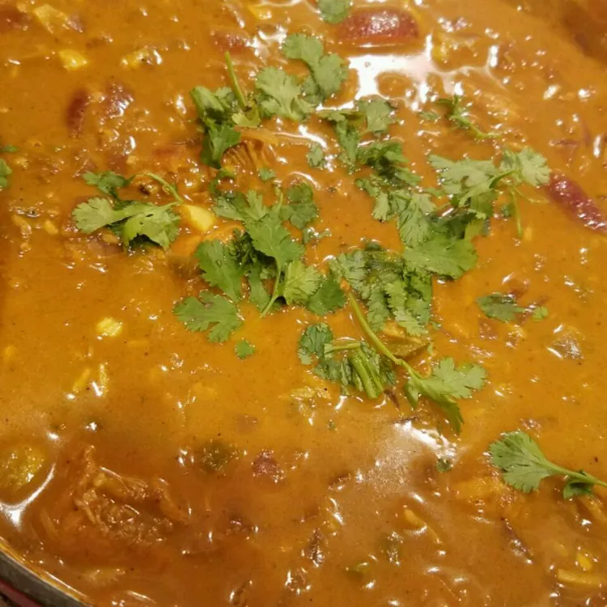

Chicken Curry

Chicken Curry is a flavorful and aromatic dish consisting of chickencurry
chopped into bite sized pieces simmered in spiced gravy. This makes it a rich
and complex utilizing a blend of various herbs and spices.
Ingredients
- 2 tablespoons white vinegar
- 1 teaspoon tamarind juice (Optional)
- quarter cup Madras curry powder
- 1 tablespoon salt, or to taste
- 1 teaspoon ground black pepper
- 2 tablespoons coconut oil
- 1 red onion, sliced
- 4 green chile peppers, halved lengthwise
- 8 green cardamom pods
- 6 whole cloves
- 12 curry leaves
- 1 teaspoon fresh ginger root, crushed
- 1 (2 inch) cinnamon stick, broken in half
- 3 cloves garlic, minced
- ½ cup water
- 1 ½ tablespoons tomato paste
- 3 tablespoons roasted Madras curry powder
- ½ (14 ounce) can coconut milk
Steps
- Cut the chicken into bite-sized pieces. Combine the vinegar, tamarind juice, 1/4 cup curry powder, salt, and pepper in a bowl. Add chicken and toss to coat.
- Heat the coconut oil in a wok or frying pan over medium heat. Cook the sliced onion, green chiles, cardamom pods, cloves, curry leaves, ginger, and cinnamon stick until the onion has softened and turned translucent, about 5 minutes. Reduce heat to medium-low, and continue cooking and stirring until the onion is very tender and dark brown, 15 to 20 minutes more. Stir in the garlic and cook for an additional minute.
- Add the chicken mixture, water, and tomato paste. Stir and simmer until the chicken is cooked through, about 10 minutes. Add the roasted curry powder and stir until evenly dispersed.
- Gradually stir in the coconut milk and simmer for 2-3 more minutes. (Do not overheat or the coconut milk may curdle.)